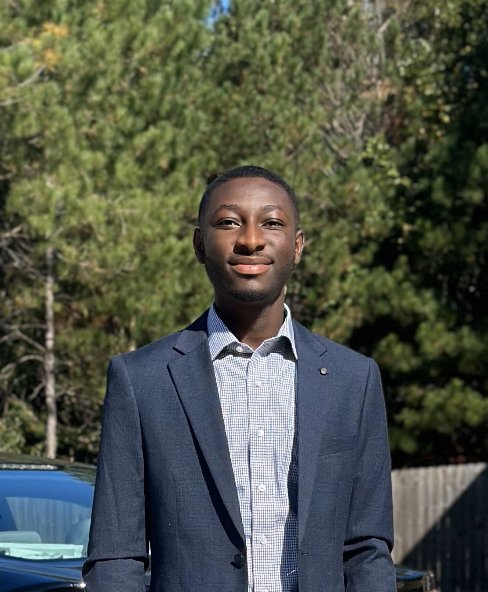

 Meet Prince Anane, a dynamic individual with a passion for technology and construction, hailing originally from the vibrant landscapes of West Africa, Ghana and now making a mark in the diverse landscape of Georgia in the United States of America. Transitioning from one continent to the other can seem intimidating, but as a junior at Kennesaw State University (KSU), I am pursuing a dual path of academic excellence, majoring in Information Technology with a keen focus on harnessing the power of digital innovation, while also embracing the intricacies of Construction Management as a minor.
Beyond academics, I am dedicated to community engagement and leadership, to include serving in the United States Air Force, and other organizations and initiatives aimed at making a positive impact. Through my service in the United States Air Force as an Optometry Technician, I have developed a profound understanding of healthcare delivery and the importance of precision and care in serving others. This experience not only honed my interpersonal skills and attention to detail but also instilled in me a deep sense of duty and responsibility. During my time at Walgreens as a Customer Service Associate, I have developed a wealth of real-world experience in providing extraordinary customer services. This has instilled in me a deep appreciation for the human aspect of technology and construction, reinforcing my commitment to delivering solutions that prioritize the needs and satisfaction of end-users.
With a blend of cultural perspectives and a thirst for knowledge, I add a unique perspective to studies, enriching classroom discussions and collaborative projects alike. As I continues my journey at KSU, I'm driven by a desire to leverage my diverse skill set to contribute meaningfully to the ever-evolving fields of technology and construction, shaping the future landscape with my creativity, determination, and unwavering commitment to excellence.